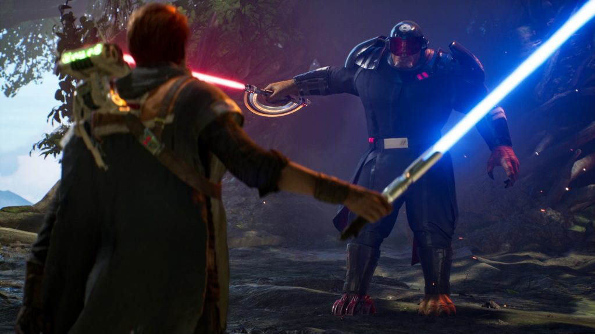
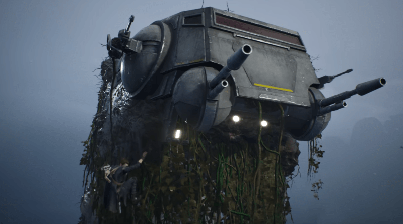

STAR WARS JEDI FALLEN ORDER REVIEW
Thomas O'Sullivan / 27.11.19
Respawns newest title Star Wars: Jedi Fallen Order is an ambitious new take for publisher EA in the Star Wars Franchise that many thought was forever doomed. Pulling inspiration from games like Sekiro and the Dark Souls games combined with a deep new story set after Star Wars Ep 3 and the fall of the jedi order due to order 66. We follow Cal Kestis and a team of intersting charactes travel multiple planets and witness the spark of the rebellion
Star Wars: Jedi Fallen Order is the game star wars fans have been praying for, set after the events of Revenge of the Sith and order 66 we follow a jedi padawan who has grown up on his own and in hiding after the member of the jedi order were killed by there own clone troopers. The game takes aspacts of games like Dark souls where all the enemies respawn when you save and the combat takes center stage in the game.
The grapics in the game are some of the most polished I've seen in quite some time. Most things look like they could be props in the prequals. However one flaw that I think is worth mentioning is the Wookies look like characters from a ps2 game and could have done some more time baking in the oven.
Combat is the meat of the game and is polished quite nicely. There are 4 difficulty modes in the game each with vayring stats that alter the games enimeies in there health and parying abillities. Cal has many skills at his disposal with you learning more and more force powers throughout the game. Each skill has is own benifits with some helping in combat and solving puzzles. You also need to learn more powers to find secrets on planets youve visited already
The level design is a refreshing take on linear story based games where you must travel back to older planets with your new powers to advance to hidden areas and unlock more points and acsseories.
Overall Jedi Fallen Order is the star wars games we have all been hoping for since EA got the liscene to make games for the star wars IP
2019 GAME AWARDS
 From a remasterd classic to a perplexing new IP here are the 2019 Game award nominees read more
From a remasterd classic to a perplexing new IP here are the 2019 Game award nominees read more
STEAM FALL SALE 2019
 Steams newest sale has our wallets firmly in the hands of valve once again read more
Steams newest sale has our wallets firmly in the hands of valve once again read more
STAR WARS JEDI FALLEN ORDER REVIEW
 An in-depth look at respawns newest game, Star Wars: Jedi Fallen Order read more
An in-depth look at respawns newest game, Star Wars: Jedi Fallen Order read more